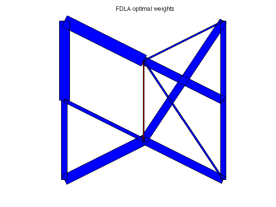
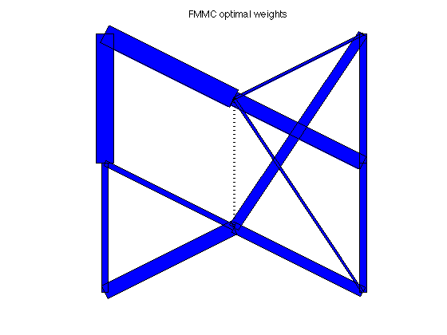
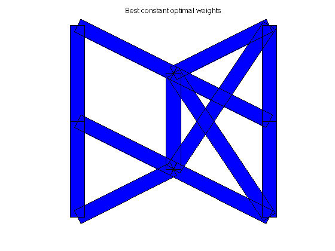
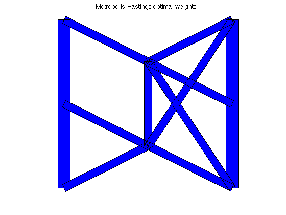

FDLA and FMMC solutions for an 8-node, 13-edge graph
A = [ 1 0 0 1 0 0 0 0 0 0 0 0 0;
-1 1 0 0 1 1 0 0 0 0 0 0 1;
0 -1 1 0 0 0 0 0 -1 0 0 0 0;
0 0 -1 0 0 -1 0 0 0 -1 0 0 0;
0 0 0 -1 0 0 -1 1 0 0 0 0 0;
0 0 0 0 0 0 1 0 0 0 1 0 0;
0 0 0 0 0 0 0 -1 1 0 -1 1 -1;
0 0 0 0 -1 0 0 0 0 1 0 -1 0];
xy = [ 1 2 3 3 1 1 2 3 ; ...
3 2.5 3 2 2 1 1.5 1 ]';
[n,m] = size(A);
[ w_fdla, rho_fdla ] = fdla(A);
[ w_fmmc, rho_fmmc ] = fmmc(A);
[ w_md, rho_md ] = max_deg(A);
[ w_bc, rho_bc ] = best_const(A);
[ w_mh, rho_mh ] = mh(A);
tau_fdla = 1/log(1/rho_fdla);
tau_fmmc = 1/log(1/rho_fmmc);
tau_md = 1/log(1/rho_md);
tau_bc = 1/log(1/rho_bc);
tau_mh = 1/log(1/rho_mh);
fprintf(1,'\nResults:\n');
fprintf(1,'FDLA weights:\t\t rho = %5.4f \t tau = %5.4f\n',rho_fdla,tau_fdla);
fprintf(1,'FMMC weights:\t\t rho = %5.4f \t tau = %5.4f\n',rho_fmmc,tau_fmmc);
fprintf(1,'M-H weights:\t\t rho = %5.4f \t tau = %5.4f\n',rho_mh,tau_mh);
fprintf(1,'MAX_DEG weights:\t rho = %5.4f \t tau = %5.4f\n',rho_md,tau_md);
fprintf(1,'BEST_CONST weights:\t rho = %5.4f \t tau = %5.4f\n',rho_bc,tau_bc);
figure(1), clf
plotgraph(A,xy,w_fdla);
text(0.55,1.05,'FDLA optimal weights')
figure(2), clf
plotgraph(A,xy,w_fmmc);
text(0.55,1.05,'FMMC optimal weights')
figure(3), clf
plotgraph(A,xy,w_md);
text(0.5,1.05,'Max degree optimal weights')
figure(4), clf
plotgraph(A,xy,w_bc);
text(0.5,1.05,'Best constant optimal weights')
figure(5), clf
plotgraph(A,xy,w_mh);
text(0.46,1.05,'Metropolis-Hastings optimal weights')
Calling sedumi: 75 variables, 17 equality constraints
For improved efficiency, sedumi is solving the dual problem.
------------------------------------------------------------
SeDuMi 1.21 by AdvOL, 2005-2008 and Jos F. Sturm, 1998-2003.
Alg = 2: xz-corrector, Adaptive Step-Differentiation, theta = 0.250, beta = 0.500
eqs m = 17, order n = 19, dim = 133, blocks = 4
nnz(A) = 93 + 0, nnz(ADA) = 289, nnz(L) = 153
it : b*y gap delta rate t/tP* t/tD* feas cg cg prec
0 : 1.99E+01 0.000
1 : -1.14E+00 5.63E+00 0.000 0.2825 0.9000 0.9000 0.87 1 1 8.9E+00
2 : -6.72E-01 2.07E+00 0.000 0.3683 0.9000 0.9000 2.58 1 1 1.7E+00
3 : -6.77E-01 4.51E-01 0.000 0.2173 0.9000 0.9000 1.19 1 1 3.5E-01
4 : -6.50E-01 8.23E-02 0.000 0.1826 0.9000 0.9000 1.11 1 1 6.1E-02
5 : -6.44E-01 3.79E-03 0.000 0.0461 0.9900 0.9900 1.02 1 1 2.8E-03
6 : -6.43E-01 9.21E-05 0.041 0.0243 0.9902 0.9900 1.00 1 1 7.1E-05
7 : -6.43E-01 1.43E-05 0.000 0.1553 0.9046 0.9000 1.00 1 1 1.1E-05
8 : -6.43E-01 2.08E-06 0.000 0.1455 0.9040 0.9000 1.00 1 1 1.7E-06
9 : -6.43E-01 3.13E-07 0.000 0.1506 0.9049 0.9000 1.00 1 1 2.6E-07
10 : -6.43E-01 4.91E-08 0.000 0.1566 0.9047 0.9000 1.00 2 2 4.3E-08
11 : -6.43E-01 7.39E-09 0.000 0.1507 0.9071 0.9000 1.00 2 2 6.8E-09
iter seconds digits c*x b*y
11 0.1 8.7 -6.4333140010e-01 -6.4333140150e-01
|Ax-b| = 3.3e-09, [Ay-c]_+ = 1.9E-09, |x|= 1.4e+00, |y|= 1.9e+00
Detailed timing (sec)
Pre IPM Post
1.000E-02 6.000E-02 0.000E+00
Max-norms: ||b||=1, ||c|| = 8.750000e-01,
Cholesky |add|=0, |skip| = 0, ||L.L|| = 11.9343.
------------------------------------------------------------
Status: Solved
Optimal value (cvx_optval): +0.643331
Calling sedumi: 99 variables, 20 equality constraints
For improved efficiency, sedumi is solving the dual problem.
------------------------------------------------------------
SeDuMi 1.21 by AdvOL, 2005-2008 and Jos F. Sturm, 1998-2003.
Alg = 2: xz-corrector, Adaptive Step-Differentiation, theta = 0.250, beta = 0.500
eqs m = 20, order n = 40, dim = 157, blocks = 4
nnz(A) = 120 + 0, nnz(ADA) = 400, nnz(L) = 210
it : b*y gap delta rate t/tP* t/tD* feas cg cg prec
0 : 2.08E+01 0.000
1 : -5.00E-01 7.45E+00 0.000 0.3588 0.9000 0.9000 3.06 1 1 7.0E+00
2 : -6.95E-01 2.14E+00 0.000 0.2874 0.9000 0.9000 1.75 1 1 1.6E+00
3 : -7.07E-01 5.15E-01 0.000 0.2408 0.9000 0.9000 1.28 1 1 3.4E-01
4 : -6.84E-01 1.18E-01 0.000 0.2285 0.9000 0.9000 1.12 1 1 7.3E-02
5 : -6.82E-01 3.03E-02 0.000 0.2575 0.9000 0.9000 1.02 1 1 1.9E-02
6 : -6.81E-01 6.83E-03 0.000 0.2252 0.9000 0.7944 1.00 1 1 4.3E-03
7 : -6.81E-01 1.75E-04 0.000 0.0257 0.9903 0.9900 1.00 1 1 1.2E-04
8 : -6.81E-01 6.30E-06 0.460 0.0359 0.9904 0.9900 1.00 1 1 5.1E-06
9 : -6.81E-01 1.45E-06 0.000 0.2307 0.9014 0.9000 1.00 1 1 1.2E-06
10 : -6.81E-01 3.15E-08 0.489 0.0217 0.9906 0.9900 1.00 1 1 4.4E-08
11 : -6.81E-01 7.26E-09 0.000 0.2306 0.9000 0.9019 1.00 2 2 9.5E-09
iter seconds digits c*x b*y
11 0.1 9.9 -6.8096066924e-01 -6.8096066932e-01
|Ax-b| = 3.7e-09, [Ay-c]_+ = 4.9E-09, |x|= 1.3e+00, |y|= 2.0e+00
Detailed timing (sec)
Pre IPM Post
1.000E-02 7.000E-02 0.000E+00
Max-norms: ||b||=1, ||c|| = 1,
Cholesky |add|=0, |skip| = 0, ||L.L|| = 170.055.
------------------------------------------------------------
Status: Solved
Optimal value (cvx_optval): +0.680961
Results:
FDLA weights: rho = 0.6433 tau = 2.2671
FMMC weights: rho = 0.6810 tau = 2.6025
M-H weights: rho = 0.7743 tau = 3.9094
MAX_DEG weights: rho = 0.7793 tau = 4.0093
BEST_CONST weights: rho = 0.7119 tau = 2.9422
   